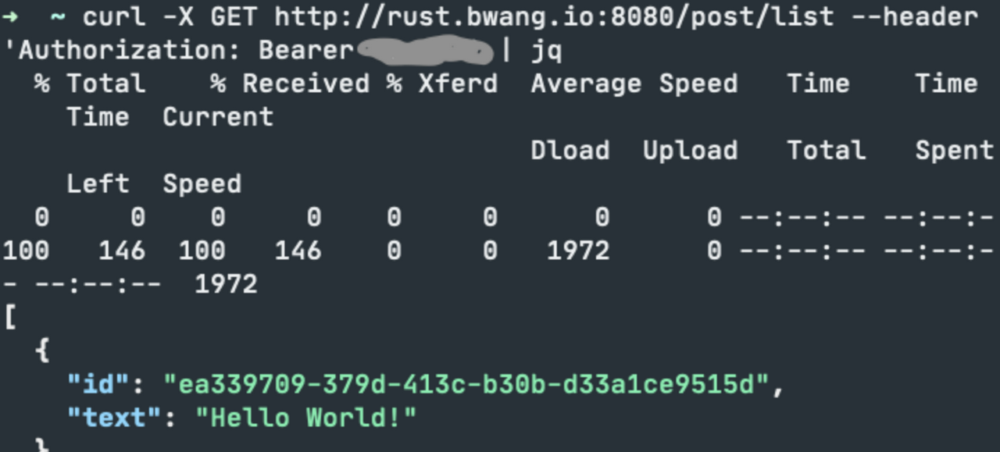

API in Rust
After some notes in rust, I created a rust app in rust deployed on Google Kubernetes Engine (GKE).
Here are some of the tooling/stack I went with. I started with the basic diesel example in actix/examples/diesel to bring up something with basic get/post features.
- Dev Tooling
- Use
systemfd cargo-watchto automatically rebuild your code and watch for change.systemfdworks by creating a parallel process, and then works with conjunction withcargo watchto reload your app whenever you save. Sometimes the reload doesn't work as intended; I had a weird bug where I had to restart whenever I added a new endpoint.
- Use
> cargo install systemfd cargo-watch
> systemfd --no-pid -s http::5000 -- cargo watch -x run
I also created a tiny frontend to support the functionality. I also added an auth so that people. Ask me for the auth token if you'd like to play with it!
- Create:
> curl -S -X POST --header "Content-Type: application/json" --data '{"text":"Hello World!"}' http://localhost:8080/post --header 'Authorization: Bearer ######'
{"id":"3afdebd0-673f-4a93-96f0-69e2ab99c756","text":"Hello World!"}
- Get:
> curl -X GET http://localhost:8080/post/3afdebd0-673f-4a93-96f0-69e2ab99c756 --header 'Authorization: Bearer ######'
{"id":"3afdebd0-673f-4a93-96f0-69e2ab99c756","text":"Hello World!"}
- List:
> curl -X GET http://localhost:8080/post/list --header 'Authorization: Bearer ######'
[{"id": "3afdebd0-673f-4a93-96f0-69e2ab99c756", "text": "Hello World!"}]
- Delete
> curl -X DELETE http://localhost:8080/post/3afdebd0-673f-4a93-96f0-69e2ab99c756 --header 'Authorization: Bearer ######'
{"id":"3afdebd0-673f-4a93-96f0-69e2ab99c756","text":"Hello World!"}
deployment
We dockerize our application and load it into gcp's container registry. Cool!
> docker run gcr.io/rust-post/rust-post-crud:v1
Starting server at: 127.0.0.1:8080
I clicked some buttons in the gcp UI, mapped the LoadBalancerIP to A recordof my domain, and it just worked, live on rust.bwang.io.

Below are some notes I took when I was looking into rust, no idea where else to post it.
Rust comes included with some nice modern tooling. Cargo is the dependency manager and build tool. Rustfmt is like gofmt, opinionated coding style across developers.
I thought that it could also be a good opportunity to document and learn.
1. Rust
I'm following the docs from doc.rust-lang.org with references from other parts of the internet. There's also rustlings and rust-lang/examples that I'm also looking at for code examples. Here's are some popular tooling.
1.1 Hello World
Do cargo new to intiate a project, and cargo run (builds if there are diffs and runs) to see what's up. The cargo.toml file is called the manifest. You can use it as a dependency manager, add meta information, specify build details (path, tests, etc), etc. The cargo command takes advantage of this manifest file to coordinate more complex projects (as opposed to just using rustc).
Other information:
- Use
cargo checkto check your code to see if it compiles (faster than actually building). Builds debug executables are stored in./target/debug. Build release executables are stored in./target/release - The
mainfunction is the entry point into a program. - Use
letto assign variables. Variables are immutable by default, usemutto make a variable mutable. Apparently there are a lot of nice things for handling reading by references in rust. We'll see about that later. std::io::Resultis a type a user uses to handle exceptions. It has two states (enumsOkandErr),.expect()checks for the error and handles it somehow.std::cmp::Orderingis another enum that returnsLess,Greater, andEqualwhen you compare two values. Thematchexpression uses a arms pattern, similar to case. This seems to be a pattern, you can combine Result and match for error handling. See below (note thatparseis a method to convert type to an annotated type, in this case, u32):
// example 1
let guess: u32 = match guess.trim().parse() {
Ok(num) => num,
Err(_) => continue,
};
1.2 Rust Concepts
1.2.1 Mutability
In rust, variables are immutable by default (aside: however, because rust allows variable shadowing, we can bind a variable twice with a different value but at a different memory, we're basically creating a new variable). Mutating (mut) an instance in place maybe faster than creating a new instance at a different memory, but creating another instance might have higher clarity when writing code.
Constants (const) are a little different from immutable variables (let). Constant types must be annotated and are evaluated at compile-time, whereas a let binding is about a run-time computed value.
1.2.2 Data types
Rust is a statically typed language so we know all the types of variables at compile time. Even when converting a variable to a different type (example 1), we need to annotate it.
Rust has four primitive scalar types: integer (defaults to i32), floats (defaults to f64), bools, and characters. You can do basic mathematical operations on number types. char literals (4 bytes of a unicode scalar value) are specified with single quotes, string literals uses double quotes.
Rust has two primitive compound types: tuples (fixed length, assorted types), arrays (fixed length, single type). Note that arrays are different from vectors (variable length).
// example 2
// tuples
let x: (i32, f64, u8) = (500, 6.4, 1);
let first = x.0;
// arrays
let mut y: [i32; 3] = [0; 3];
let first = y[0]
1.2.3 Functions
For functions, I think is pretty standard. () evaluates to expressions where as {} is an expression (returns something). Statements have semicolons, expressions don't. Functions return the last expression implicitly.
// example 3
fn function(x: i32) {
let y = {
let x = 3;
x + 1
};
// returns y implicitly
}
1.2.4 Ownership
Ownership is one of the key concepts of rust.
For starters, a stack is a part of memory that's last in, first out, everything fixed size. When you exit a function, you're popping off plates off the stack, and all the variables with it. (C++ uses RAII, which is rust's drop function). A heap is for data with unknown size at compile time (for example, a string), and the heap returns some information (pointer, size, etc) to store on the stack.
For rust, each value has an owner. There can only be one owner at a time. when the owner goes out of scope, the value is also gone with it. Let's say we have two variables referencing the same string:
// example 4
// s1 not valid
let s1 = String::from("hello");
let s2 = s1;
// s1 valid
let s1 = String::from("hello");
let s2 = s1.clone();
Traditionally, s1 and s2 point to the same reference. To ensure memory safety, rust no longer considers s1 here valid after s2 is created. There are no double memory free errors when there's a one to one relationship between references and resource. If we really wanted to, we can do a .clone() for heap variables to copy data.
Likewise, for exiting and entering functions, the ownership of a heap variable changes, and the previous variable is decommissioned.
The ownership of some stack variable, for example, integer or a memory reference, can still be used after the owernship changes. It doesn't use the .drop() function, it uses .Copy() instead.
// example 5
fn main() {
let s = String::from("hello");
takes_ownership(s);
// s is no longer valid here
let s1 = String::from("hello");
borrows_reference(&s1)
// s is still valid here
}
fn takes_ownership(some_string: String) {
println!("{}", some_string);
}
fn borrows_reference(some_string: String) {
s.len()
}
But how do we use some heap variable after it enters a function? We can borrow the variable via reference. Because memory addresses (references) are stored on the stack and uses .Copy(), the ownership of the resource is still in the main function, nothing gets decommissioned. Pretty cool design.
1.2.5 Slice Type
This piece of code returns the first word in a string:
// example 6
fn first_word(s: &String) -> &str {
let bytes = s.as_bytes();
for (i, &item) in bytes.iter().enumerate() {
if item == b' ' {
return &s[0..i];
}
}
&s[..]
}
fn main() {
let mut s = String::from("hello world");
let word = first_word(&s); // immutable reference
s.clear(); // error!
println!("the first word is: {}", word);
}
It turns the string into an array of bytes, and then looks for the b' ' byte, and returns the slice of a string. Notice that in the example above, &s is an immutable reference to the string, and s.clear()is a mutable reference (modifies the value), and fails.
Other information:
- Rust uses snake case for functions and variable names.
- Double quotations
//denotes the start of a comment. - Control flows are also pretty self-explanatory. Truthiness for control flows must evaluate to a bool. Similar to golang. Rustacians prefer for loops due to safety and conciseness.
- References are not mutable by default, but it CAN be mutable ...
- “Only one person borrow at a time” to ensure no data races. You can have multiple immutable references to data, but you can only have one mutable reference to a piece of data. You also can't have a mutable reference while you have an immutable one.
// example 7
let mut s = String::from("hello");
let r1 = &mut s;
let r2 = &mut s;
// fails, simultaneous borrow
println!("{}, {}", r1, r2);
- Dangling references: you can't have references to nothing; compile error.
1.3 Structs
Structs are similar to tuples. Here's how you would create an instance of a struct:
// example 8
struct User {
username: String,
email: String,
sign_in_count: u64,
active: bool,
}
let mut user1 = User {
email: String::from("someone@example.com"),
username: String::from("someusername123"),
active: true,
sign_in_count: 1,
};
user1.email = String::from("anotheremail@example.com");
If the instance is mutable, all the fields of a struct are mutable. You can also have tuple structs: no names, just types of the fields, but their types of are of the type defined by the struct.
1.3.1 Example with Structs
// example 9
#[derive(Debug)]
struct Rectangle {
width: u32,
height: u32,
}
impl Rectangle {
fn area(&self) -> u32 {
self.width * self.height
}
fn can_hold(&self, other: &Rectangle) -> bool {
self.width > other.width && self.height > other.height
}
}
fn main() {
let rect1 = Rectangle {
width: 30,
height: 50,
};
let rect2 = Rectangle {
width: 10,
height: 40,
};
println!("rect1 is {:#?}", rect1);
println!(
"The area of the rectangle is {} square pixels.",
rect1.area()
);
println!("Can rect1 hold rect2? {}", rect1.can_hold(&rect2));
}
Need to add #[derive(Debug)] so that Rectangle gets the Debug trait when printing structs. Traits are like interfaces. In this example, we also added two methods, the latter to use another Rectangle struct for the syntax.
Other information:
{:#?}for pretty formatting structs- If you need to deference in C/C++, you need to use an –> operator, but in rust, referencing and dereferencing is automatic.
- You don't need
&selfas a parameter for methods; these are called associated functions. - You can split up
implblocks
1.4 Enums
Here's how the standard library defines the enum for IpAddr:
// example 10
struct Ipv4Addr {
// --snip--
}
struct Ipv6Addr {
// --snip--
}
pub enum IpAddrKind {
V4(Ipv4Addr),
V6(Ipv6Addr),
}
enum IpAddr {
V4(String),
V6(String),
}
enum Message {
Quit,
Move { x: i32, y: i32 },
Write(String),
ChangeColor(i32, i32, i32),
}
impl Message {
fn call(&self) {
//
}
}
let m = Message::Write(String::from("hello"));
m.call();
With this, we can define a function to take any IpAddrKind, like so: fn route(ip_kind: IpAddrKind) {}. We can also create instances of specific IpAddrKinds: let four = IpAddrKind::V4;. Within an Enum, we can have a wide variety of types, like Message, given above. You can also define methods on enums.
You can use the match control flow operator on enums like in the random number guessing example. This allows the compile to confirm all possible cases are handled.
1.4.1 Option
There's a useful Option enum that you can use to define nullable objects. The <T> syntax is used to denote that the Some variant of the Option enum can hold one piece of data of any type. If we use None rather than Some, we need to tell rust what type of Option<t>.
// example 11
enum Option<T> {
Some(T),
None,
}
let x: i8 = 5;
let y: Option<i8> = Some(5);
let sum = x + y;
The above code won't work because you can't add an i8 to a value that might not be a i8.
Other information:
- A common pattern to handle nulls is to use
matchlike so:
// example 12
fn plus_one(x: Option<i32>) -> Option<i32> {
match x {
None => None,
Some(i) => Some(i + 1),
}
}
let five = Some(5);
let six = plus_one(five);
let none = plus_one(None);
- You have to cover all the cases when matching enum, else compile error.
- You can use
_to match any value that aren't specified before it. - The following two pieces of code are the same. You can use
if letto match one value. You can also do aif letandelseto specify a non-trivial function for the_condition.
// example 13
let some_u8_value = Some(0u8);
match some_u8_value {
Some(3) => println!("three"),
_ => (),
}
if let Some(3) = some_u8_value {
println!("three");
}
1.5 Project Management
This is chapter 7 in the rust-lang book. Rust comes with the module system to manage your code's organization. More about it. cargo.toml defines a package and contains information on how to build crates. The top level module is usually main.rs or lib.rs depending on if you're writing a program or library.
Packages are a cargo feature that lets you build, test, and share crates. You create a package with the command cargo new; it contains a cargo.toml that describes how to build crates. Crates are like bundled functionality for modules, mapping to a single executable. Everything is private by default including functions, modules, and structs.
1.5.1 Use
Here's an example of an actual project I found on github that uses mod and use, use brings the module into scope.
Use the as keyword to alias a new name, for example use std::io::Result as IoResult;. The name available in the new scope is by default private. Use pub useto make it public.
You can use nested paths to put a bunch of use things together like so: use std::{cmp::Ordering, io}; or use std::io::{self, Write}; (self references itself). You can also use the glob operator to bring all public items into scope like so: use std::collections::*;
Put external packages into Cargo.toml under dependencies. A bunch of them are available at crates.io. The standard library (e.g. use std::collections:Hashmap;) is automatically imported.
- Start relative paths with the
superkeyword, e.g:
// example 14
fn serve_order() {}
mod back_of_house {
fn fix_incorrect_order() {
cook_order();
super::serve_order();
}
fn cook_order() {}
}
- It's not idiomatic to bring the function to scope, only the module that has the function.
1.6 Standard Library
1.6.1 Vector Example
- Create:
let v: Vec<i32> = Vec::new();. orlet v = vec![0];vec!is a macro for convenience
- Add:
v.push(5);- note that push uses a mutable reference, so while this is happening you can't hold another reference
- Remember that variables are immutable by default
- Drop: go out of scope
- Get:
// example 15
let v = vec![1, 2, 3, 4, 5];
let third: &i32 = &v[2];
println!("The third element is {}", third);
match v.get(2) {
Some(third) => println!("The third element is {}", third),
None => println!("There is no third element."),
}
- Iterating:
for i in &v {}orfor i in &mut v {}to change elements
You can use vectors in conjunction with enums to store data of multiple types:
// example 16
enum SpreadsheetCell {
Int(i32),
Float(f64),
Text(String),
}
let row = vec![
SpreadsheetCell::Int(3),
SpreadsheetCell::Float(10.12),
];
There is also an introduction to strings and hashmaps in the rust-lang book but I figured one is enough. I can just google as I go along. I didn't expect this book to be this fucking long.
1.7 Errors
There are two classes of errors:
Recoverable errors
- handle with
Result<T, E>like how we have in the past.
- handle with
Unrecoverable errors
- calls
panic!
- calls
You can use unwrap to directly access the Some() value of a result. Likewise, you expect is the same but can also return a custom panic statement.
Another super common pattern in rust is error propagation. The code below are the same. We can place the ? operator after a Result value to return an Error value, else return an Ok value.
// example 17
fn read_username_from_file() -> Result<String, io::Error> {
let f = File::open("hello.txt");
let mut f = match f {
Ok(file) => file,
Err(e) => return Err(e),
};
let mut s = String::new();
match f.read_to_string(&mut s) {
Ok(_) => Ok(s),
Err(e) => Err(e),
}
}
fn read_username_from_file() -> Result<String, io::Error> {
let mut f = File::open("hello.txt")?;
let mut s = String::new();
f.read_to_string(&mut s)?;
Ok(s)
}
fn read_username_from_file() -> Result<String, io::Error> {
let mut s = String::new();
File::open("hello.txt")?.read_to_string(&mut s)?;
Ok(s)
}
Other information:
- Attempting to access information that doesn't exist, for example, beyond the end of a vector, will also call
panic! - Common pattern:
error.kindreturns an error enum which you can use to handle different types of errors.
// example 18
let f = match f {
Ok(file) => file,
Err(error) => match error.kind() {
ErrorKind::NotFound => match File::create("hello.txt") {
Ok(fc) => fc,
Err(e) => panic!("Problem creating the file: {:?}", e),
},
other_error => {
panic!("Problem opening the file: {:?}", other_error)
}
},
};
1.8 Generics, Traits, Lifetimes
Duplicating code is added work, looks shitty, and can lead to errors. One way to remove the duplication of code is to write reusable functions. But in a typed language, what if you wanted to have a function to handle multiple types? In our signature we can use a generic type fn get_some<T>(list: &[T]) -> &T {. We can also define types in structs with the generic type; you can define single, multiple types like so:
// example 19
struct Point<T> {
x: T,
y: T,
}
struct Point<T, U> {
x: T,
y: U,
}
Similarly with structs, like with the Option enum, it's also possible to hold generic data types.
Traits are a collection of methods defined for an unknown type; it's like generic types but for functions (it's really similar to interfaces, but there are a few differences). Here's an example in rust-by-example that I think is pretty good. impl Trait is straightforward for me, but there are more complex things you can do, described here. There's a where clause and a + syntax.
The scope of which that reference is valid (lifetime) is inferred in rust most of the time. Lifetime generics is created to prevent dangling references, which means that a program is trying to reference data other than the data it's intending to reference. The longest function below doesn't work, but the longest_2 function works. Why? We don't know whether we're returning a borrowed value .as_str()or not.
// example 20
fn main() {
let string1 = String::from("abcd");
let string2 = "xyz";
let result = longest(string1.as_str(), string2);
println!("The longest string is {}", result);
}
fn longest(x: &str, y: &str) -> &str {
if x.len() > y.len() {
x
} else {
y
}
}
fn longest_2<'a>(x: &'a str, y: &'a str) -> &'a str {
if x.len() > y.len() {
x
} else {
y
}
}
There's also rust lifetime elision rules/exceptions so I'm just omit that in my notes for now. If I find something interesting, I might write about it later.
Other information
- For generics, you'll need to make sure it works for all types, else you get a compile error
- Rust uses monomorphization which is the process of filling in specific types at compile time
- Most people use the name
&'awhen denoting a lifetime
1.9 Tests
In this format:
fn prints_and_returns_10(a: i32) -> i32 {
println!("I got the value {}", a);
10
}
#[cfg(test)]
mod tests {
use super::*;
#[test]
fn this_test_will_pass() {
let value = prints_and_returns_10(4);
assert_eq!(10, value);
}
}
Do cargo test -- --test-threads=2 --show-output to run all tests in the project with 2 threads. At the top level, it's customary to create a tests directory next to src. Cargo will know to look for integration tests in that directory.
1.10 Sample Projects
Reading from this, just writing some stuff down, nothing too comprehensive.
1.10.1 Grep Project
- use
std::env:argsto read command line arguments - separate of concerns by having a
main.rsand business logic inlib.rs - use
eprintln!to print errors